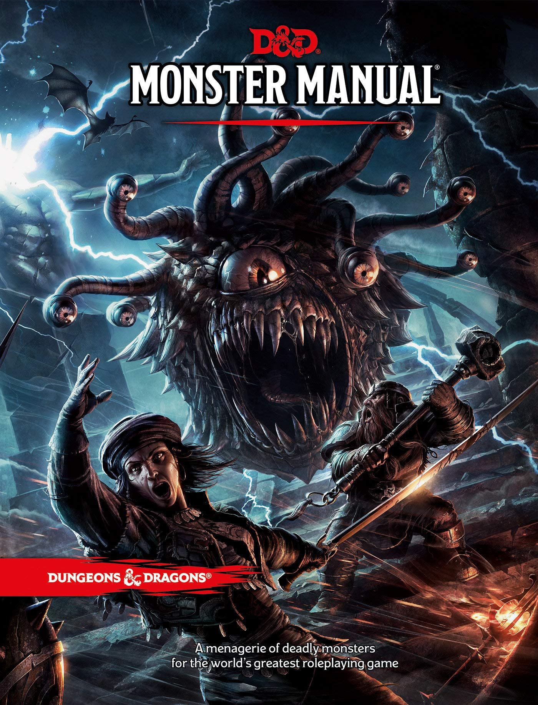
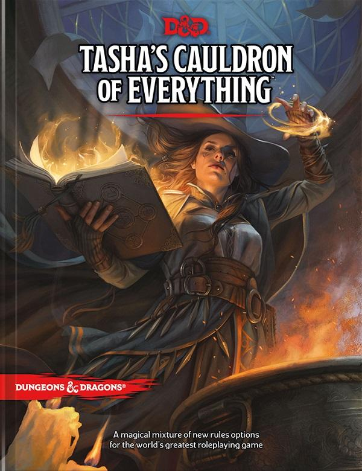

Manuales básicos
Manual del Jugador

Manual del DM

Manual de Monstruos
Expansion de Tasha
Las minas perdidas de Phandelver (Caja de inicio)
Explora laberintos subterráneos; saquea grandes tesoros; combate contra monstruos legendarios; la caja de inicio de dungeons & dragons es tu pasaporte a un mundo de emocionantes historias que se desarrollarán en tu imaginación, esta caja contiene las reglas esenciales y todo lo que necesitas para jugar con personajes heroicos, que vivirán peligrosas aventuras en un mundo de fantasía, cuando estés listo para más, amplía tus aventuras con el manual del jugador, la guía del dungeon master y el manual de monstruos de la quinta edición de dungeons & dragons.

La maldición de Strahd
Cubierta por furiosas nubes de tormenta y recortada contra los viejos muros del Castillo Ravenloft, se yergue la figura del conde vampiro Strahd von Zarovich. Un trueno retumba entre las torres del castillo. El aullido del viento crece mientras el vampiro contempla desde las alturas la aldea de Barovia.Allá abajo, en lontananza, pero nunca fuera del alcance de su extraordinaria visión, un grupo de aventureros acaba de adentrarse en su dominio. En el rostro de Strahd se forma la más sutil de las sonrisas; su oscuro plan está en marcha. Sabía que vendrían, y también sabe por qué lo han hecho. Todo se desarrolla acorde a sus deseos.Un rayo centellea rasgando la oscuridad, pero el vampiro ya no está. Solo el lamento del viento, o tal vez el aullido de un lobo solitario, impregna el aire de la medianoche. El amo y señor del Castillo Ravenloft va a tener invitados para cenar. Y tú estás invitado.Una aventura de Dungeons & Dragons para personajes de niveles 1-10.

Waterdeep: El golpe de los dragones
El famoso explorador volothamgeddarm os necesita para una misión muy sencilla; así da comienzo un alocado viaje por los distritos de waterdeep, en el que sacaréis a la luz un maléfico plan en el que están involucradas las figuras más influyentes de la ciudad. Una magnífica aventura urbana os espera; enfrentad vuestro coraje y habilidad contra villanos de un tipo al que nunca os habíais enfrentado antes; que dé comienzo la caza de los dragones. Una aventura de dungeons dragons para personajes de niveles 1-5.

Waterdeep: La mazmorra del mago loco
La mazmorra más fabulosa de todas en la ciudad de waterdeep se encuentra enclavado el portal bostezante, una taberna así llamada por el amplio pozo situado en su sala común; al fondo de este ruinoso conducto comienza una mazmorra laberíntica que todos, salvo los más aguerridos aventureros, procuran evitar; conocida como undermountain, representa los dominios de halaster blackcloak; tiempo ha que el mago loco mora en estas tenebrosas profundidades, poblando su guarida con monstruos, trampas y misterios; con qué fin? esta pregunta es una fuente constante de preocupación y especulaciones. Esta aventura retoma la historia donde quedó al término de waterdeep: el golpe de los dragones y llevará a los aventureros desde (como poco) el nivel 5 hasta el nivel 20, si es que deciden explorar el hogar de halaster en su totalidad; el presente libro detalla los 23 niveles de undermountain, junto con el refugio subterráneo de skullport; hay tesoros y secretos por doquier, pero cuidado dónde pisas. Una aventura de dungeons dragons para personajes de niveles 5-20.

Guia de aventurero de la costa de la espada
Bienvenidos a la costa de la espada la costa de la espada, una región de los reinos olvidados, cuenta con ejemplos sobresalientes de civilización, lugares peligrosos en los que abunda el mal y, rodeándolo todo, una naturaleza salvaje que ofrece a los exploradores tanto oportunidades como desafíos, la guía del aventurero de la costa de la espada es un recurso valioso tanto para dungeon masters como para jugadores, además de describir a los pueblos y emplazamientos de la costa de la espada, el libro contiene una gran variedad de opciones para personajes, que fascinarán e inspirarán a todos los grupos de aventureros.

La tumba de la aniquiliación
Dungeons and dragons: la tumba de la aniquilación edición española es un suplemento de rol para el juego dungeons and dragons, que nos proporciona una aventura para dungeons & dragons para personajes de niveles 1-11, la maldición de la muerte se cierne sobre chult, calles y tabernas se llenan de rumores acerca de una enfermedad devastadora que afecta a todos aquellos que alguna vez han resucitado de entre los muertos, sus rostros, cada vez más huesudos, reflejan debilidad mientras un extraño mal les dirige inexorablemente a la muerte que una vez esquivaron, los jugadores más experimentados de dungeons & dragons reconocerán enseguida la amenaza que se cierne sobre ellos en la tumba de la aniquilación, junglas, volcanes, piratas, extrañas edificaciones ancestrales y un pueblo nativo cuyo comportamiento es cuanto menos extraño, solo son algunas de las amenazas a las que os tenéis que enfrentar para descubrir qué fuerza oscura está infectando a los que han vuelto a la vida. únicamente la destrucción del artefacto que está robando una a una el alma de los caídos puede revertir la situación y hacer que todo vuelva a la normalidad, liberar a los espíritus cautivos y permitir que los muertos vuelvan a alzarse una vez más, hasta ahora todos los esfuerzos por lograrlo han fracasado, sois la última oportunidad de que el equilibrio entre la vida y la muerte no se altere para siempre, hasta entonces la muerte es un hecho irreversible y esto añade tensión y desesperación a la narración de las partidas de la tumba de la aniquilación, no habrá hechizo que pueda salvarte si caes, de modo que es más importante que nunca medir tus pasos, la tumba de la aniquilación, una campaña con más de 200 páginas repletas de contenido, de modo que sea imposible explorar todas las posibilidades de cada ubicación en una sola partida.

Descenso a Averno
¡Forja tu destino con fuego infernal! Bienvenido a Puerta de Baldur, una ciudad de ambición, corrupción y asesinatos. ¡Acabas de empezar tu carrera como aventurero y ya formas parte de una conspiración que abarca desde las sombras de Puerta de Baldur hasta el frente de la Guerra de la Sangre! Esta épica aventura llevará a los jugadores del nivel 1 al 13, explorando una de las localizaciones más célebres de todos los mundos de fantasía. Además, descubrirán la última encarnación de uno de los sucesos más singulares de toda la historia de Dungeons & Dragons: ¡una guerra entre demonios y diablos que amenaza con llevarse por delante la propia ciudad! Su misión les llevará a explorar el plano exterior de los Nueve Infiernos, en busca de alguna esperanza para detener la catástrofe. ¿Se te ocurre un reto mayor? ¿Tienes lo que hace falta para utilizar máquinas de guerra infernales y pactos perversos contra la archidiablesa Zariel y sus legiones diabólicas? ¿Podrás hallar un camino seguro para volver a casa cuando te enfrentes con los infinitos males de los Nueve Infiernos? En esta aventura, uno de los principales peligros que correrás será la continua tentación de los diablos para que firmes algún contrato con ellos, ¿Eres mas listo que estos seres infernales y puedes salir ganador o aceptarás sus servicios en momentos desesperados? ¡Cuidado!, puede parecer fácil, pero los diablos siempre tienen un as bajo la manga.